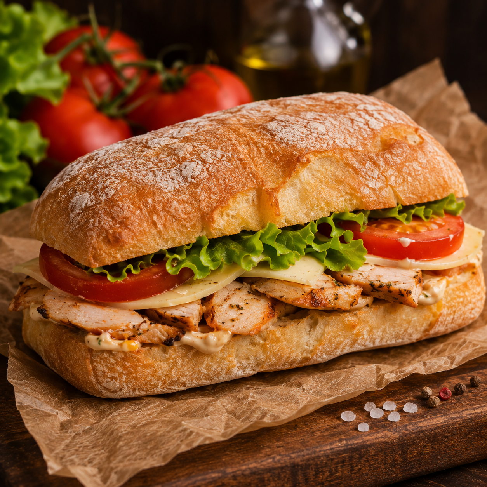
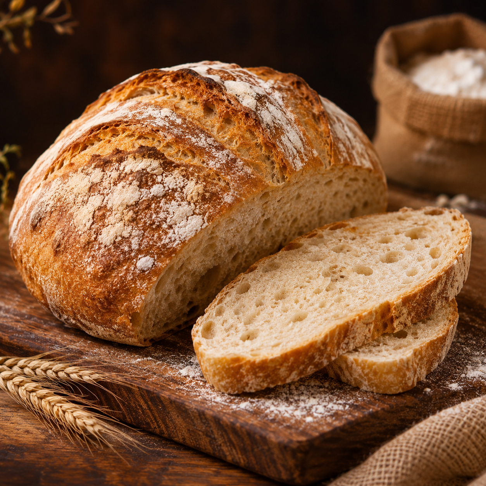
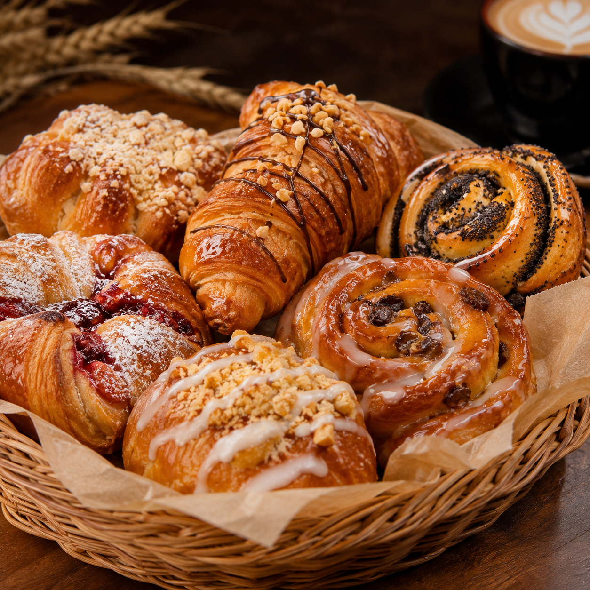

Ситне
Шаурма
Соковита курка, овочі та соус у лаваші.
130 грн
Свіжа випічка, ароматний хліб та улюблені перекуси — усе для смачного дня.
Оберіть страву та додайте її до кошика.
Соковита курка, овочі та соус у лаваші.

Сосиска в м’якій булочці з соусами.

Хрустка чіабата з апетитною начинкою.

Булочка, котлета, сир та овочі.

Свіжий хліб із рум’яною скоринкою.

Оберіть улюблену випічку зі списку.
«Сіль & Цукор» — пекарня для тих, хто любить хрусткий хліб, солодкі булочки та ситні перекуси.
📍 м. Вінниця, район проїзду Дубовецького
Точну адресу входу уточнюйте безпосередньо у пекарні.
Відкрити Google Maps ↗